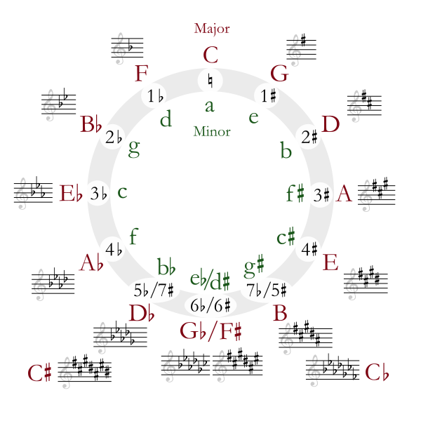

Beat duration: milliseconds
Wave:
In the textbox below, enter the notes of each beat on its own line. Each line should be a comma separated list of frequencies (in Hz) to play. Up to 10 frequencies on each line can be entered. To make a longer note, simply repeat that frequency on the next beat (on the next line). To make a pause enter an empty line (or several lines). It is also possible to set a smaller gain (volume) for a certain frequency by including @ and a number between 0 and 1. For example 440@0.5 plays 440Hz at half the volume.
|
Helpful formulas (results rounded to 2 decimal places):
Equal tempering. Enter base frequency \(b\) in Hz and
the number of half steps \(x\) to go up or down (negative \(x\) for going down).
For example, C (to be exact C5) is 3 half steps up from A, which is usually 440 Hz.
To calculate the number of half steps, recall the notes of the chromatic scale:
\(b = {}\) \(x = {}\) \(b \, 2^{x/12} = {}\) Just tunings. Enter base frequency in Hz, and the ratio as \(x\) over \(y\). For example, starting at A with 440Hz, to get to C we go a minor third, that is, \( \frac{6}{5} \). \(b = {}\) \(x = {}\) \(y = {}\) \(b \, \left( \frac{x}{y} \right) = {}\)
Pythagorean tuning. Enter base frequency in Hz, the number \(x\) of perfect fifths to go up or down, and the number \(y\) of octaves to go up or down. For example, starting at A with 440Hz, to get to C one goes down 3 fifths and up two octaves. \(b = {}\) \(x = {}\) \(y = {}\) \(b \, {\left( \frac{3}{2} \right)}^{x} \, 2^{y} = {}\)
The circle of fifths.

|